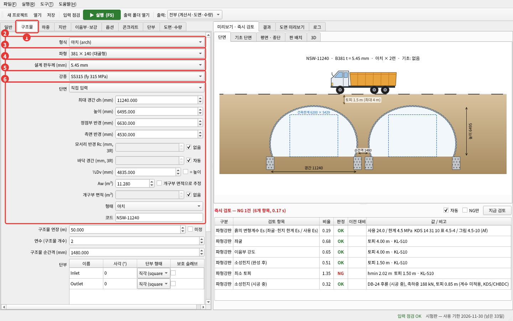
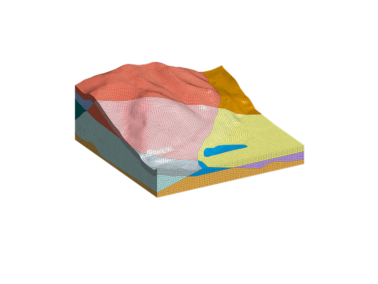
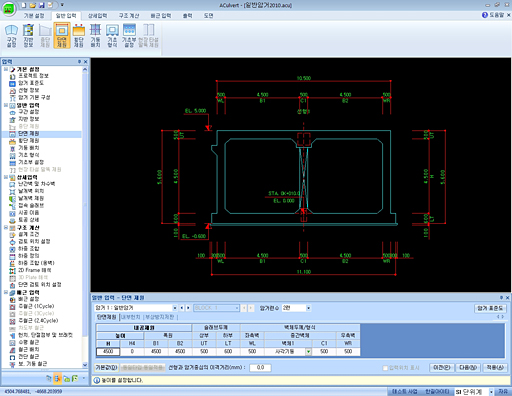

串聯設計資訊。
依幾何與設計條件生成圖面及數量，減少重複輸入，並將審核資訊整合為同一流程。
我們不只供應鋼材。每一個波形鋼板與波形鋼管案件，都由本公司以自行開發的設計系統完成結構計算、圖面與數量，交付業主與設計單位。We do not just supply steel. Every corrugated plate and pipe project is engineered in-house with our own design systems: structural calculations, drawings and quantities, delivered to the owner and the designer.강재만 공급하지 않습니다. 모든 파형강판·파형강관 프로젝트는 자체 개발 설계 시스템으로 구조계산, 도면, 수량까지 당사가 직접 완성해 발주처와 설계사에 제출합니다.
將幾何、結構與製造資訊整合為同一流程。CORRA 是為波形鋼板自主開發的 BIM 程式，從結構檢核串聯至圖面及數量自動生成。

輸入設計條件，
以 3D 確認結構幾何與配置。
結構與道路配置
箱形斷面與埋設形狀
入口及附屬結構幾何
BIM 的核心在於串聯幾何與資訊。
以 3D 與資料共同說明設計，補足傳統圖面的溝通。
依幾何與設計條件生成圖面及數量，減少重複輸入，並將審核資訊整合為同一流程。
業主、設計單位及施工廠商可透過 3D 模型與圖面，共同檢視結構幾何、配置及附屬結構。
同時呈現產品、工法應用及設計製造成果，支援新技術提案與技術協調。
韓國國土交通部 BIM 基本指針推動以 3D 模型串聯設計資訊並供後續階段運用。CORRA 提供串聯波形鋼板設計與製造資訊的 BIM 能力。
CORRA 實際範例輸出。
點選圖面即可放大。
平面 · 縱斷面 · 橫斷面
鋼板分割與配置
箱形平面 · 斷面
入口幾何 · 斷面配置
示範自動生成功能的範例圖面；實際應用前，須由工程師審核專案設計條件、計算與圖面結果。
Geometry, structural and fabrication information in one workflow. CORRA is our in-house BIM software for corrugated structural plate, connecting structural checks to automatic drawing and quantity generation.
Enter the design conditions,
then inspect the geometry and layout in 3D.
Structure and road layout
Box cross-section and buried geometry
Entrance and ancillary structures
BIM connects geometry with information.
Communicate design through 3D models and data, alongside drawings.
Generate drawings and quantities from geometry and design conditions, reducing repeated data entry and keeping review information in one workflow.
Owners, designers and contractors can review geometry, layout and ancillary structures together using the 3D model and drawings.
Show product and method applications together with engineering and fabrication deliverables to support technical proposals and coordination.
Korea’s MOLIT BIM guidelines promote connecting design information through 3D models for use in later project stages. CORRA provides BIM capabilities linking corrugated structural plate design and fabrication data.
Actual CORRA sample outputs.
Select a drawing to enlarge it.
Plan · Longitudinal section · Cross-section
Plate segmentation and arrangement
Box structure: plan · Sections
Entrance geometry · Sections
Sample drawings demonstrating automatic generation. Project-specific design inputs, calculations and drawings require engineer review before use.
형상과 구조·제작 정보를 하나의 설계 흐름으로. CORRA는 파형강판을 위한 자체 개발 BIM 프로그램으로, 구조검토에서 도면·수량 자동 생성까지 연결합니다.
설계조건을 입력하고,
구조물의 형상과 배치를 3D로 확인합니다.
구조물과 도로 배치
박스형 단면과 매설 형상
진입부와 부속구조물 형상
BIM의 핵심은 형상과 정보를 연결하는 것입니다.
도면으로 전달하던 설계를 3D와 데이터로 함께 설명합니다.
형상과 설계조건을 바탕으로 도면과 수량을 생성해 반복 입력을 줄이고, 검토할 정보를 한 흐름으로 정리합니다.
발주처·설계사·시공사가 구조물의 형상과 배치, 부속구조물을 3D 모델과 도면으로 함께 살펴볼 수 있습니다.
제품·공법의 적용 모습과 설계·제작 성과품을 함께 제시해 신기술 제안과 기술협의를 지원합니다.
국토교통부의 건설산업 BIM 기본지침은 3차원 모델을 바탕으로 설계정보를 연결하고 후속 단계에서 활용하는 방향을 제시합니다. CORRA는 파형강판의 설계·제작정보를 연결하는 BIM 역량을 제공합니다.
실제 CORRA 샘플 출력물입니다.
도면을 누르면 크게 볼 수 있습니다.
평면 · 종단 · 횡단면
판 분할과 배치 구성
박스형 평면 · 단면
진입부 형상 · 단면 구성
자동 생성 기능을 소개하는 샘플 도면입니다. 실제 프로젝트 적용 전 설계조건과 계산·도면 결과에 대한 엔지니어 검토를 거칩니다.

整合跨距、淨高、斷面、覆土與載重條件。Coordinate span, clearance, profile, cover and loads.경간·높이·단면·토피·하중을 연결합니다.

依設計資料顯示三維模型，輔助方案溝通與施工前檢討。Visualise design data in 3D for coordination and construction review.설계정보를 3D로 확인해 협의와 시공 검토에 활용합니다.

以模型資料連結板材配置、編號與材料數量。Link the model to plate layouts, numbering and quantities.모델정보를 강판 배치·번호·수량으로 연결합니다.

以專案輸入產出配置圖及設計成果。Produce layouts and design deliverables from project inputs.프로젝트 입력으로 배치도와 설계 성과품을 생성합니다.

呈現不同斷面方案，配合淨空與工址條件檢討。Study alternative sections against clearance and site conditions.건축한계·현장조건에 맞는 단면 대안을 검토합니다.

輔助端部形狀與現場接續條件協調。Coordinate end geometry and site transitions.단부 형상과 현장 연결조건 협의에 활용합니다.
自主開發的埋設螺旋波形鋼管結構檢核程式；輸入管徑、厚度、載重及覆土厚度等條件，即可查看各項檢核結果與適用範圍表。
依輸入條件檢核管壁壓縮、挫屈、柔度係數、最小覆土及撓度等項目。
依選定波形，比較各管徑與厚度的最小覆土、最大填土高度及管體重量。
結構計算書可輸出為 Word，各管徑適用範圍表可輸出為 Excel，供技術協調與成果製作使用。
可設定 KL-510 道路載重等韓國設計條件；鐵路載重及特殊條件另依業主規範確認。
支援依 ASTM A796／AASHTO 檢核及台灣道路、鐵路載重設定；介面與計算書支援韓文及繁體中文。
一併查看程式畫面與輸出範例。
管徑 · 厚度 · 覆土條件一覽
設計概要 · 計算過程 · 檢核結果
依 v1.0.0 使用手冊展示功能及畫面；實際應用前須確認業主規範、設計條件，並由工程師審核結果。
Our in-house structural checking software for buried helically corrugated steel pipe. Enter diameter, thickness, loading and cover depth to review individual checks and design-range tables.
Review wall compression and buckling, flexibility factor, minimum cover and deflection for the specified inputs.
Compare minimum cover, maximum fill height and pipe mass by diameter and thickness for the selected corrugation.
Export calculation reports to Word and design-range tables to Excel for technical coordination and deliverables.
Set Korean design conditions such as KL-510 road loading. Railway loads and special conditions are checked against the employer’s criteria.
Supports ASTM A796 / AASHTO-based checks and Taiwan road and railway load settings. Interfaces and reports support Korean and Traditional Chinese.
Explore the interface and sample outputs.
Diameter · Thickness · Cover at a glance
Design basis · Calculations · Check results
Features and screenshots from user manual v1.0.0. Confirm the employer’s criteria and design conditions, and have an engineer review the results before application.
렉스틸이 자체 개발한 매설 나선형 파형강관 구조검토 프로그램입니다. 관경·두께·하중·토피 등 설계조건을 입력하고, 항목별 검토 결과와 적용범위표를 확인합니다.
관벽 압축·좌굴, 연성계수, 최소 토피와 처짐 등 입력 조건에 따른 검토 결과를 확인합니다.
선택한 파형의 관경·두께별 최소 토피와 최대 성토높이, 관체중량 등을 표로 비교합니다.
구조계산서는 Word로, 관경별 적용범위표는 Excel로 저장해 기술협의와 성과품 작성에 활용합니다.
KL-510 도로하중 등 국내 설계조건을 설정해 검토합니다. 철도하중과 특수조건은 발주처 기준에 맞춰 확인합니다.
ASTM A796·AASHTO 기반 검토와 대만 도로·철도하중 설정을 지원합니다. 화면과 계산서는 한국어·번체중국어를 지원합니다.
프로그램 화면과 출력 예시를 함께 살펴보세요.
관경 · 두께 · 토피 조건을 한눈에
설계 개요 · 계산 과정 · 검토 결과
사용설명서 v1.0.0의 기능과 예시 화면입니다. 실제 적용 전 발주처 기준과 설계조건을 확인하고 엔지니어가 결과를 검토합니다.
除 CORRA 外，亦持有支援結構、地盤、細部分析及附屬結構設計的軟體。
 持有軟體
持有軟體
持有軟體 持有軟體
持有軟體 持有軟體
持有軟體
持有軟體上述軟體圖片來源為各製造商產品介紹資料。
Alongside CORRA, we own software supporting structural, geotechnical and detailed analysis, and ancillary-structure design.
Software availableFor analysis and design checks of civil structures, including moving loads and construction stages.
Image source · MIDAS IT official product page ↗Assess ground, buried structures, foundations and construction-stage behaviour.
Image source · MIDAS IT official product page ↗Software availableDetailed behaviour and nonlinear analysis of structures and connections.
Image source · MIDAS IT official product page ↗Software availableFor stability and section checks, drawings, calculations and quantities for retaining walls.
Image source · aroad official product page ↗For design and deliverables for culverts, wing walls and other ancillary structures.
Image source · aroad official product page ↗Software images are from the respective manufacturers’ product literature.
CORRA와 함께 구조·지반·상세해석 및 부속구조물 설계를 지원하는 프로그램을 보유하고 있습니다.
보유 프로그램보유 프로그램보유 프로그램위 프로그램 이미지는 각 제작사의 제품소개 자료입니다.
跨距 · 淨空 · 覆土 · 載重 · 地盤Span, clearance, cover, loads, ground경간·건축한계·토피·하중·지반
斷面選定與逐項檢核，必要時 FEMProfile selection and item checks, FEM where needed단면 선정과 항목 검토, 필요 시 FEM
計算書 · 圖面 · 數量 · 3D，供送審Report, drawings, quantities and 3D for submission계산서·도면·수량·3D, 심사 제출용
依製作詳圖於 REXSTEEL 韓國工廠製造，出貨前檢驗Made to the fabrication details at REXSTEEL Korea, inspected before shipment제작상세도대로 REXSTEEL 한국 공장 제작, 출하 전 검사
組裝說明、現場指導與變形量測Assembly instructions, site guidance and deformation monitoring조립 설명, 현장 지도, 변형 측정
波形鋼板、波形鋼管或機堡案件，皆由本公司完成結構設計。Plate, pipe or shelter projects, all engineered by us.파형강판·파형강관·격납고 프로젝트 모두 당사가 구조설계를 맡습니다.